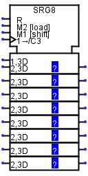
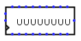

Shift Register
Shift Register
| Library: | Memory |  |
| Introduced: | 2.3.0 | |
| Appearance: |  | |
| Logisim-clasique |
Logisim-Evolution Logisim-HolyCross |
Behavior
This register consists of several stages, where each clock may lead to each stage receiving the value in the previous stage, while a new value is loaded into the first stage. The component optionally also supports parallel loads and stores to all stages' values.
The clear input resets all stages to 0 (all zeroes) asynchronously; that is, as long as the clear input is 1, all values are pinned to 0, regardless of the clock input.
Pins

The Appearance attribute allows two different images for this component. Logisim Evolution presents inputs to the west and outputs to the east, while I present the pins from top to bottom and from west to east.
* An asterisk marks pins that exist only when the Parallel Load attribute is enabled.
- Input Clear: Labeled R
- If 0 or indefinite U, this input has no effect. As long as it is 1, the register value is forced to 0 asynchronously, regardless of the current value of the clock input, and the other inputs have no effect. Bit width 1.
- *Input Load: Labeled M2 [load]
- When this input is set to 1, the register will load the value found at data input (D0..Dn) the next time the clock is triggered. Bit width 1.
- Input Schift : Labeled M1 [Schift]
- When it is set to 1 or indefinite U, all stages advance when the clock is triggered, but if it is set to 0, there is no advance. This input is ignored if the Load input is 1. Bit width 1.
- Input Clock: Labeled 1->/C3 West edge, bottom pin marked with triangle (input, bit width 1)
- Clock: At the instant that this is triggered as specified by the Trigger attribute, the component may advance the stages or load new values as indicated by the load and Shift inputs.
- Input: Labeled 1,3D
- The value of this input will be loaded into the first stage when the clock is triggered and the Shift input is set to 1. The width of the bits corresponds to the Data bits attribute.
- * Input D0..Dn: Labeled 2,3D
- The number of inputs depends on the Number of stages property. These values are loaded into all stages when the clock is triggered while the Load input is at 1. The width of the bits corresponds to the Data bits attribute.
- * Output Q0..Qn :
- The number of outputs depends on the Number of stages property. Outputs the value stored in each stage. The width of the bits corresponds to the Data bits attribute.
- Output:
- Emits the value stored in the last stage. The width of the bits corresponds to the Data bits attribute.
Attributes
When the component is selected or being added, the digits '0' through '9' alter its Number of Stages
attribute and Alt-0 through Alt-9 alter its Data Bits
attribute.
- Data Bits
- The bit width of the value stored in each stage.
- Number of Stages
- The number of stages included in the component.
- Parallel Load
-
If
yes,
then the component includes inputs and outputs facilitating parallel access to all the stages' values. - Trigger
-
Configures how the clock input is interpreted. The value
rising edge
indicates that the register should update its value at the instant when the clock rises from 0 to 1. Thefalling edge
value indicates that it should update at the instant the clock falls from 1 to 0. - Label
- The text within the label associated with the component.
- Label Font
- The font with which to render the label.
Poke Tool Behavior
If the Parallel Load attribute is no, or if the Data Bits attribute is more than 4, then poking the register has no effect. Otherwise, clicking the component will bring keyboard focus to the clicked stage (indicated by a red rectangle), and typing a hexadecimal digit will change the value stored in that stage.
Text Tool Behavior
Allows the label associated with the component to be edited.
Back to Library Reference